LaBOG est un jeu de mots quotidien inspiré de Boggle qui se joue à partir d'une grille de 16 lettres disposées sur un plateau de 4 cases sur 4.
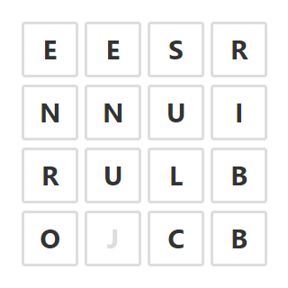
Cet article présente le fonctionnement du jeu et décrit comment l'utiliser et comment il fonctionne. Pour avoir des explications plus détaillées sur la règle du jeu, vous pouvez aussi consulter Comment jouer à LaBOG ?
Appuyer sur l'icone en haut à la gauche du titre de l'écran pour faire apparaitre le menu principal du jeu :
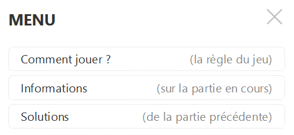
Plus on joue, plus on s'améliore... surtout si on consulte régulièrement les solutions de la partie précédente pour voir ce qui nous avait échappé :)
Pour proposer une réponse, vous devez taper votre mot en appuyant sur les cases de la grille. Les lettres du mot entré doivent se suivre en se touchant (horizontalement, verticalement ou en diagonale). Et il n'est pas possible d'utiliser deux fois la même case.
Comme le montre la vidéo, la couleur des cases change au fur et à mesure de la saisie :
Si besoin, l'icone (en bas à gauche de la grille) permet d'effacer la dernière lettre choisie.
Quand le mot est complet, il reste à valider la saisie avec l'icone (en bas à droite de la grille).
Après chaque mot validé, le milieu de l'écran de LaBOG permet de visualiser la progression dans la partie :
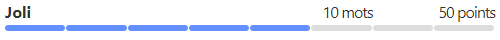
C'est le nombre de points qui détermine le niveau en cours. La partie démarre avec zéro point au niveau "C'est parti" :
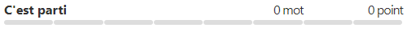
Le nombre de points est calculé en fonction des mots trouvés. Les mots de 4 lettres ne font gagner que 1 seul point. Les mots plus longs (de 5 à 9 lettres) rapportent 1 point par lettre (de 5 à 9 points donc).
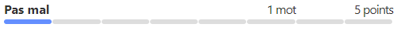
L'objectif est de réaliser environ 60 % du total des points possibles pour arriver au niveau "Génial" et ainsi gagner la partie.
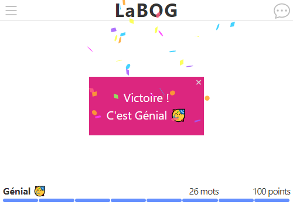
La partie est gagné lorsque le niveau "Génial" est atteint. Mais il reste des mots jouables... Et donc, un ultime niveau "Formidable" pour les personnes qui réussissent à découvrir tous les mots acceptés.
Réponse : C'est pour éviter de tourner en rond :)
Au lieu de tourner autour de la grille en trépignant, ça permet de faire tourner la grille ! On a alors un autre point de vue, ce qui aide beaucoup pour trouver de nouveaux mots...
Au commencement il y a la grille au naturel :
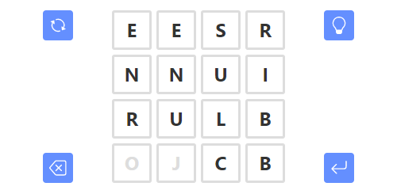
Après un premier clic sur celle-ci effectue un quart de tour vers la droite :
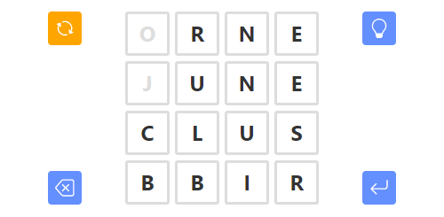
Et ainsi de suite...
L'icone devient grise (et donc inutilisable) dès qu'une lettre a été saisie.
Réponse : Elle indique le nombre de mots qu'il reste à trouver !
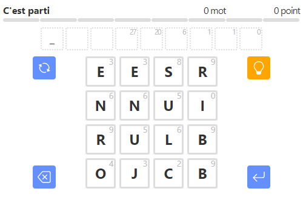
Ces nombres sont ensuite recalculés au fur et à mesure qu'on trouve des mots pour indiquer combien il en reste à découvrir.
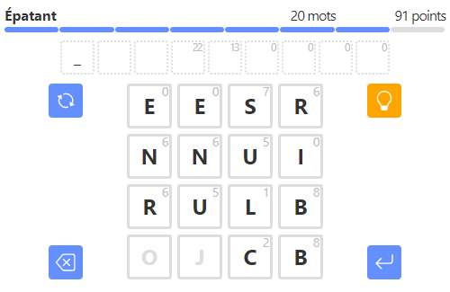
Mauvaise nouvelle, y'a un bug...
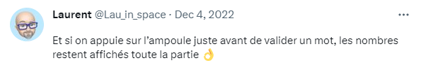
Les cases grisées (le "O" et le "J" dans la copie d'écran) indiquent que la lettre n'est plus du tout utilisée dans les mots qui restent à trouver :
À la différence du "I" pour lequel l'ampoule indique seulement qu'il n'y a plus de mot débutant par un "I". Par contre, il reste encore au moins un mot qui contient cette lettre "I".
Il reste encore quelques trucs à expliquer, mais cette documentation devrait vous permettre de jouer à LaBOG dans de bonnes conditions. Alors bonne chance, et que le meilleur gagne...
Michel (2023/05/18)